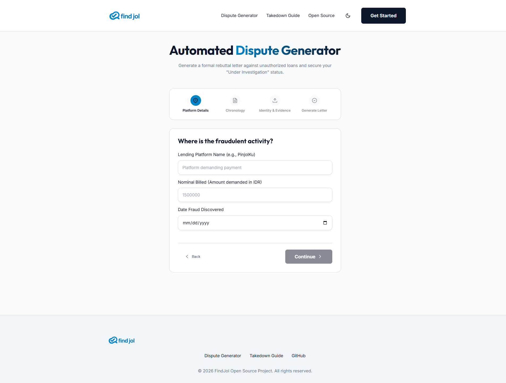

Investor Pitch Deck 2026
A zero-trust web platform that transforms victims into organized plaintiffs in under 3 minutes.

Unlike competitors that expose sensitive ID cards to AWS/Google Cloud...
FindJol parses highly sensitive KTP documents entirely offline.
We use Headless OpenCV and PyTorch local instances, establishing immediate physical trust and Gov-Tech level data privacy.